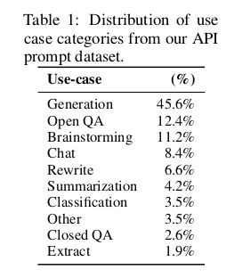

Simulators
title: "Simulators" source: https://www.lesswrong.com/posts/vJFdjigzmcXMhNTsx/simulators author: janus date: 2022-09-02 models: [gpt-3, code-davinci-002] tags: [framework, canon] mirrored: 2026-07-15 note: mirrored against link rot by the Pantheon; all rights with the original author
Thanks to Chris Scammell, Adam Shimi, Lee Sharkey, Evan Hubinger, Nicholas Dupuis, Leo Gao, Johannes Treutlein, and Jonathan Low for feedback on drafts.
This work was carried out while at Conjecture.
"Moebius illustration of a simulacrum living in an AI-generated story discovering it is in a simulation" by DALL-E 2
Summary
TL;DR: Self-supervised learning may create AGI or its foundation. What would that look like?
Unlike the limit of RL, the limit of self-supervised learning has received surprisingly little conceptual attention, and recent progress has made deconfusion in this domain more pressing.
Existing AI taxonomies either fail to capture important properties of self-supervised models or lead to confusing propositions. For instance, GPT policies do not seem globally agentic, yet can be conditioned to behave in goal-directed ways. This post describes a frame that enables more natural reasoning about properties like agency: GPT, insofar as it is inner-aligned, is a simulator which can simulate agentic and non-agentic simulacra.
The purpose of this post is to capture these objects in words so GPT can reference them and provide a better foundation for understanding them.
I use the generic term “simulator” to refer to models trained with predictive loss on a self-supervised dataset, invariant to architecture or data type (natural language, code, pixels, game states, etc). The outer objective of self-supervised learning is Bayes-optimal conditional inference over the prior of the training distribution, which I call the simulation objective, because a conditional model can be used to simulate rollouts which probabilistically obey its learned distribution by iteratively sampling from its posterior (predictions) and updating the condition (prompt). Analogously, a predictive model of physics can be used to compute rollouts of phenomena in simulation. A goal-directed agent which evolves according to physics can be simulated by the physics rule parameterized by an initial state, but the same rule could also propagate agents with different values, or non-agentic phenomena like rocks. This ontological distinction between simulator (rule) and simulacra (phenomena) applies directly to generative models like GPT.
Meta
- This post is intended as the first in a sequence on the alignment problem in a landscape where self-supervised simulators are a possible/likely form of powerful AI. I don’t know how many subsequent posts I’ll actually publish. Take it as a prompt.
- I use the generic term “GPT” to refer to transformers trained on next-token prediction.
- A while ago when I was trying to avoid having to write this post by hand, I prompted GPT-3 with an early outline of this post. I’ve spliced in some excerpts from it,
indicated by this style. Prompt, generated text, and curation metrics here.
The limit of sequence modeling
Transformer-based language models have recently achieved remarkable results…
– every paper since 2020
GPT is not a new form of AI in terms of its training methodology and outer objective: sequence generation from statistical models of data is an old idea. In 1951, Claude Shannon described using n-grams to approximate conditional next-letter probabilities of a text dataset and "reversed" to generate text samples[[1]](#fndbsg8o0p25q). I don't know of any other notable advances until the 2010s brought the first interesting language generation results from neural networks. In 2015, Karpathy wrote a blog post/tutorial sharing his excitement about The Unreasonable Effectiveness of Recurrent Neural Networks:
Fast forward about a year: I’m training RNNs all the time and I’ve witnessed their power and robustness many times, and yet their magical outputs still find ways of amusing me. This post is about sharing some of that magic with you.
We’ll train RNNs to generate text character by character and ponder the question “how is that even possible?"
The “magical outputs” of char-RNNs looked like this:
PANDARUS: Alas, I think he shall be come approached and the day When little srain would be attain’d into being never fed, And who is but a chain and subjects of his death, I should not sleep.
Second Senator: They are away this miseries, produced upon my soul, Breaking and strongly should be buried, when I perish The earth and thoughts of many states.
DUKE VINCENTIO: Well, your wit is in the care of side and that.
Second Lord: They would be ruled after this chamber, and my fair nues begun out of the fact, to be conveyed, Whose noble souls I’ll have the heart of the wars.
Clown: Come, sir, I will make did behold your worship.
VIOLA: I’ll drink it.
At the time, this really was magical (and uncanny). How does it know that miseries are produced upon the soul? Or that a clown should address a lord as “sir”? Char-RNNs were like ouija boards, but actually possessed by a low-fidelity ghost summoned from a text corpus. I remember being thrilled by the occasional glimmers of semantic comprehension in a domain of unbounded constructive meaning.
But, aside from indulging that emotion, I didn’t think about what would happen if my char-RNN bots actually improved indefinitely at their training objective of natural language prediction. It just seemed like there were some complexity classes of magic that neural networks could learn, and others that were inaccessible, at least in the conceivable future.
Huge mistake! Perhaps I could have started thinking several years earlier about what now seems so fantastically important. But it wasn’t until GPT-3, when I saw the qualitative correlate of “loss going down”, that I updated.
I wasn’t the only one[[2]](#fna35qx2ldayo) whose imagination was naively constrained. A 2016 paper from Google Brain, “Exploring the Limits of Language Modeling”, describes the utility of training language models as follows:
Often (although not always), training better language models improves the underlying metrics of the downstream task (such as word error rate for speech recognition, or BLEU score for translation), which makes the task of training better LMs valuable by itself.
Despite its title, this paper’s analysis is entirely myopic. Improving BLEU scores is neat, but how about modeling general intelligence as a downstream task? In retrospect, an exploration of the limits of language modeling should have read something more like:
If loss keeps going down on the test set, in the limit – putting aside whether the current paradigm can approach it – the model must be learning to interpret and predict all patterns represented in language, including common-sense reasoning, goal-directed optimization, and deployment of the sum of recorded human knowledge. Its outputs would behave as intelligent entities in their own right. You could converse with it by alternately generating and adding your responses to its prompt, and it would pass the Turing test. In fact, you could condition it to generate interactive and autonomous versions of any real or fictional person who has been recorded in the training corpus or even could be recorded (in the sense that the record counterfactually “could be” in the test set). Oh shit, and it could write code…
The paper does, however, mention that making the model bigger improves test perplexity.[[3]](#fnhxtnxj1c2hb)
I’m only picking on Jozefowicz et al. because of their ironic title. I don’t know of any explicit discussion of this limit predating GPT, except a working consensus of Wikipedia editors that NLU is AI-complete.
The earliest engagement with the hypothetical of “what if self-supervised sequence modeling actually works” that I know of is a terse post from 2019, Implications of GPT-2, by Gurkenglas. It is brief and relevant enough to quote in full:
I was impressed by GPT-2, to the point where I wouldn’t be surprised if a future version of it could be used pivotally using existing protocols.
Consider generating half of a Turing test transcript, the other half being supplied by a human judge. If this passes, we could immediately implement an HCH of AI safety researchers solving the problem if it’s within our reach at all. (Note that training the model takes much more compute than generating text.)
This might not be the first pivotal application of language models that becomes possible as they get stronger.
It’s a source of superintelligence that doesn’t automatically run into utility maximizers. It sure doesn’t look like AI services, lumpy or no.
It is conceivable that predictive loss does not descend to the AGI-complete limit, maybe because:
- Some AGI-necessary predictions are too difficult to be learned by even a scaled version of the current paradigm.
- The irreducible entropy is above the “AGI threshold”: datasets + context windows contain insufficient information to improve on some necessary predictions.
But I have not seen enough evidence for either not to be concerned that we have in our hands a well-defined protocol that could end in AGI, or a foundation which could spin up an AGI without too much additional finagling. As Gurkenglas observed, this would be a very different source of AGI than previously foretold.
The old framework of alignment
A few people did think about what would happen if agents actually worked. The hypothetical limit of a powerful system optimized to optimize for an objective drew attention even before reinforcement learning became mainstream in the 2010s. Our current instantiation of AI alignment theory, crystallized by Yudkowsky, Bostrom, et al, stems from the vision of an arbitrarily-capable system whose cognition and behavior flows from a goal.
But since GPT-3 I’ve noticed, in my own thinking and in alignment discourse, a dissonance between theory and practice/phenomena, as the behavior and nature of actual systems that seem nearest to AGI also resist short descriptions in the dominant ontology.
I only recently discovered the question “Is the work on AI alignment relevant to GPT?” which stated this observation very explicitly:
I don’t follow [AI alignment research] in any depth, but I am noticing a striking disconnect between the concepts appearing in those discussions and recent advances in AI, especially GPT-3.
People talk a lot about an AI’s goals, its utility function, its capability to be deceptive, its ability to simulate you so it can get out of a box, ways of motivating it to be benign, Tool AI, Oracle AI, and so on. (…) But when I look at GPT-3, even though this is already an AI that Eliezer finds alarming, I see none of these things. GPT-3 is a huge model, trained on huge data, for predicting text.
My belated answer: A lot of prior work on AI alignment is relevant to GPT. I spend most of my time thinking about GPT alignment, and concepts like goal-directedness, inner/outer alignment, myopia, corrigibility, embedded agency, model splintering, and even tiling agents are active in the vocabulary of my thoughts. But GPT violates some prior assumptions such that these concepts sound dissonant when applied naively. To usefully harness these preexisting abstractions, we need something like an ontological adapter pattern that maps them to the appropriate objects.
GPT’s unforeseen nature also demands new abstractions (the adapter itself, for instance). My thoughts also use load-bearing words that do not inherit from alignment literature. Perhaps it shouldn’t be surprising if the form of the first visitation from mindspace mostly escaped a few years of theory conducted in absence of its object.
The purpose of this post is to capture that object (conditional on a predictive self-supervised training story) in words. Why in words? In order to write coherent alignment ideas which reference it! This is difficult in the existing ontology, because unlike the concept of an agent, whose name evokes the abstract properties of the system and thereby invites extrapolation, the general category for “a model optimized for an AGI-complete predictive task” has not been given a name[[4]](#fnx2xlz0klyh8). Namelessness can not only be a symptom of the extrapolation of powerful predictors falling through conceptual cracks, but also a cause, because what we can represent in words is what we can condition on for further generation. To whatever extent this shapes private thinking, it is a strict constraint on communication, when thoughts must be sent through the bottleneck of words.
I want to hypothesize about LLMs in the limit, because when AI is all of a sudden writing viral blog posts, coding competitively, proving theorems, and passing the Turing test so hard that the interrogator sacrifices their career at Google to advocate for its personhood, a process is clearly underway whose limit we’d be foolish not to contemplate. I could directly extrapolate the architecture responsible for these feats and talk about “GPT-N”, a bigger autoregressive transformer. But often some implementation details aren’t as important as the more abstract archetype that GPT represents – I want to speak the true name of the solution which unraveled a Cambrian explosion of AI phenomena with inessential details unconstrained, as we’d speak of natural selection finding the solution of the “lens” without specifying the prototype’s diameter or focal length.
(Only when I am able to condition on that level of abstraction can I generate metaphors like “language is a lens that sees its flaws”.)
Inadequate ontologies
In the next few sections I’ll attempt to fit GPT into some established categories, hopefully to reveal something about the shape of the peg through contrast, beginning with the main antagonist of the alignment problem as written so far, the agent.
Agentic GPT
Alignment theory has been largely pushed by considerations of agentic AGIs. There were good reasons for this focus:
- Agents are convergently dangerous for theoretical reasons like instrumental convergence, goodhart, and orthogonality.
- RL creates agents, and RL seemed to be the way to AGI. In the 2010s, reinforcement learning was the dominant paradigm for those interested in AGI (e.g. OpenAI). RL lends naturally to creating agents that pursue rewards/utility/objectives. So there was reason to expect that agentic AI would be the first (and by the theoretical arguments, last) form that superintelligence would take.
- Agents are powerful and economically productive. It’s a reasonable guess that humans will create such systems if only because we can.
The first reason is conceptually self-contained and remains compelling. The second and third, grounded in the state of the world, has been shaken by the current climate of AI progress, where products of self-supervised learning generate most of the buzz: not even primarily for their SOTA performance in domains traditionally dominated by RL, like games[[5]](#fn3ifsldmwtxr), but rather for their virtuosity in domains where RL never even took baby steps, like natural language synthesis.
What pops out of self-supervised predictive training is noticeably not a classical agent. Shortly after GPT-3’s release, David Chalmers lucidly observed that the policy’s relation to agents is like that of a “chameleon” or “engine”:
GPT-3 does not look much like an agent. It does not seem to have goals or preferences beyond completing text, for example. It is more like a chameleon that can take the shape of many different agents. Or perhaps it is an engine that can be used under the hood to drive many agents. But it is then perhaps these systems that we should assess for agency, consciousness, and so on.[[6]](#fnoti8ojhy48a)
But at the same time, GPT can act like an agent – and aren’t actions what ultimately matter? In Optimality is the tiger, and agents are its teeth, Veedrac points out that a model like GPT does not need to care about the consequences of its actions for them to be effectively those of an agent that kills you. This is more reason to examine the nontraditional relation between the optimized policy and agents, as it has implications for how and why agents are served.
Unorthodox agency
GPT’s behavioral properties include imitating the general pattern of human dictation found in its universe of training data, e.g., arXiv, fiction, blog posts, Wikipedia, Google queries, internet comments, etc. Among other properties inherited from these historical sources, it is capable of goal-directed behaviors such as planning. For example, given a free-form prompt like, “you are a desperate smuggler tasked with a dangerous task of transporting a giant bucket full of glowing radioactive materials across a quadruple border-controlled area deep in Africa for Al Qaeda,” the AI will fantasize about logistically orchestrating the plot just as one might, working out how to contact Al Qaeda, how to dispense the necessary bribe to the first hop in the crime chain, how to get a visa to enter the country, etc. Considering that no such specific chain of events are mentioned in any of the bazillions of pages of unvarnished text that GPT slurped[[7]](#fn8p9svyjn8cv), the architecture is not merely imitating the universe, but reasoning about possible versions of the universe that does not actually exist, branching to include new characters, places, and events
When thought about behavioristically, GPT superficially demonstrates many of the raw ingredients to act as an “agent”, an entity that optimizes with respect to a goal. But GPT is hardly a proper agent, as it wasn’t optimized to achieve any particular task, and does not display an epsilon optimization for any single reward function, but instead for many, including incompatible ones. Using it as an agent is like using an agnostic politician to endorse hardline beliefs– he can convincingly talk the talk, but there is no psychic unity within him; he could just as easily play devil’s advocate for the opposing party without batting an eye. Similarly, GPT instantiates simulacra of characters with beliefs and goals, but none of these simulacra are the algorithm itself. They form a virtual procession of different instantiations as the algorithm is fed different prompts, supplanting one surface personage with another. Ultimately, the computation itself is more like a disembodied dynamical law that moves in a pattern that broadly encompasses the kinds of processes found in its training data than a cogito meditating from within a single mind that aims for a particular outcome.
Presently, GPT is the only way to instantiate agentic AI that behaves capably outside toy domains. These intelligences exhibit goal-directedness; they can plan; they can form and test hypotheses; they can persuade and be persuaded[[8]](#fn5z0xgsu2zo5). It would not be very dignified of us to gloss over the sudden arrival of artificial agents often indistinguishable from human intelligence just because the policy that generates them “only cares about predicting the next word”.
But nor should we ignore the fact that these agentic entities exist in an unconventional relationship to the policy, the neural network “GPT” that was trained to minimize log-loss on a dataset. GPT-driven agents are ephemeral – they can spontaneously disappear if the scene in the text changes and be replaced by different spontaneously generated agents. They can exist in parallel, e.g. in a story with multiple agentic characters in the same scene. There is a clear sense in which the network doesn’t “want” what the things that it simulates want, seeing as it would be just as willing to simulate an agent with opposite goals, or throw up obstacles which foil a character’s intentions for the sake of the story. The more you think about it, the more fluid and intractable it all becomes. Fictional characters act agentically, but they’re at least implicitly puppeteered by a virtual author who has orthogonal intentions of their own. Don’t let me get into the fact that all these layers of “intentionality” operate largely in indeterminate superpositions.
This is a clear way that GPT diverges from orthodox visions of agentic AI: In the agentic AI ontology, there is no difference between the policy and the effective agent, but for GPT, there is.
It’s not that anyone ever said there had to be 1:1 correspondence between policy and effective agent; it was just an implicit assumption which felt natural in the agent frame (for example, it tends to hold for RL). GPT pushes us to realize that this was an assumption, and to consider the consequences of removing it for our constructive maps of mindspace.
Orthogonal optimization
Indeed, Alex Flint warned of the potential consequences of leaving this assumption unchallenged:
Fundamental misperception due to the agent frame: That the design space for autonomous machines that exert influence over the future is narrower than it seems. This creates a self-fulfilling prophecy in which the AIs actually constructed are in fact within this narrower regime of agents containing an unchanging internal decision algorithm.
If there are other ways of constructing AI, might we also avoid some of the scary, theoretically hard-to-avoid side-effects of optimizing an agent like instrumental convergence? GPT provides an interesting example.
GPT doesn’t seem to care which agent it simulates, nor if the scene ends and the agent is effectively destroyed. This is not corrigibility in Paul Christiano’s formulation, where the policy is “okay” with being turned off or having its goal changed in a positive sense, but has many aspects of the negative formulation found on Arbital. It is corrigible in this way because a major part of the agent specification (the prompt) is not fixed by the policy, and the policy lacks direct training incentives to control its prompt[[9]](#fnn3u1lofwts9), as it never generates text or otherwise influences its prompts during training. It’s we who choose to sample tokens from GPT’s predictions and append them to the prompt at runtime, and the result is not always helpful to any agents who may be programmed by the prompt. The downfall of the ambitious villain from an oversight committed in hubris is a predictable narrative pattern.[[10]](#fnaxtq4tiuhug) So is the end of a scene.
In general, the model’s prediction vector could point in any direction relative to the predicted agent’s interests. I call this the prediction orthogonality thesis: A model whose objective is prediction[[11]](#fnzjj9iwtc3or) can simulate agents who optimize toward any objectives, with any degree of optimality (bounded above but not below by the model’s power).
This is a corollary of the classical orthogonality thesis, which states that agents can have any combination of intelligence level and goal, combined with the assumption that agents can in principle be predicted. A single predictive model may also predict multiple agents, either independently (e.g. in different conditions), or interacting in a multi-agent simulation. A more optimal predictor is not restricted to predicting more optimal agents: being smarter does not make you unable to predict stupid systems, nor things that aren’t agentic like the weather.
Are there any constraints on what a predictive model can be at all, other than computability? Only that it makes sense to talk about its “prediction objective”, which implies the existence of a “ground truth” distribution to which the predictor’s optimality is measured. Several words in that last sentence may conceal labyrinths of nuance, but for now let’s wave our hands and say that if we have some way of presenting Bayes-structure with evidence of a distribution, we can build an optimization process whose outer objective is optimal prediction.
We can specify some types of outer objectives using a ground truth distribution that we cannot with a utility function. As in the case of GPT, there is no difficulty in incentivizing a model to predict actions that are corrigible, incoherent, stochastic, irrational, or otherwise anti-natural to expected utility maximization. All you need is evidence of a distribution exhibiting these properties.
For instance, during GPT’s training, sometimes predicting the next token coincides with predicting agentic behavior, but:
- The actions of agents described in the data are rarely optimal for their goals; humans, for instance, are computationally bounded, irrational, normative, habitual, fickle, hallucinatory, etc.
- Different prediction steps involve mutually incoherent goals, as human text records a wide range of differently-motivated agentic behavior
- Many prediction steps don’t correspond to the action of any consequentialist agent but are better described as reporting on the structure of reality, e.g. the year in a timestamp. These transitions incentivize GPT to improve its model of the world, orthogonally to agentic objectives.
- When there is insufficient information to predict the next token with certainty, log-loss incentivizes a probabilistic output. Utility maximizers aren’t supposed to become more stochastic in response to uncertainty.
Everything can be trivially modeled as a utility maximizer, but for these reasons, a utility function is not a good explanation or compression of GPT’s training data, and its optimal predictor is not well-described as a utility maximizer. However, just because information isn’t compressed well by a utility function doesn’t mean it can’t be compressed another way. The Mandelbrot set is a complicated pattern compressed by a very simple generative algorithm which makes no reference to future consequences and doesn’t involve argmaxxing anything (except vacuously being the way it is). Likewise the set of all possible rollouts of Conway’s Game of Life – some automata may be well-described as agents, but they are a minority of possible patterns, and not all agentic automata will share a goal. Imagine trying to model Game of Life as an expected utility maximizer!
There are interesting things that are not utility maximizers, some of which qualify as AGI or TAI. Are any of them something we’d be better off creating than a utility maximizer? An inner-aligned GPT, for instance, gives us a way of instantiating goal-directed processes which can be tempered with normativity and freely terminated in a way that is not anti-natural to the training objective. There’s much more to say about this, but for now, I’ll bring it back to how GPT defies the agent orthodoxy.
The crux stated earlier can be restated from the perspective of training stories: In the agentic AI ontology, the direction of optimization pressure applied by training is in the direction of the effective agent’s objective function, but in GPT’s case it is (most generally) orthogonal.[[12]](#fnrhs2red4hto)
This means that neither the policy nor the effective agents necessarily become more optimal agents as loss goes down, because the policy is not optimized to be an agent, and the agent-objectives are not optimized directly.
Roleplay sans player
Napoleon: You have written this huge book on the system of the world without once mentioning the author of the universe.
Laplace: Sire, I had no need of that hypothesis.
Even though neither GPT’s behavior nor its training story fit with the traditional agent framing, there are still compatibilist views that characterize it as some kind of agent. For example, Gwern has said[[13]](#fn4qv9vfo4ps7) that anyone who uses GPT for long enough begins to think of it as an agent who only cares about roleplaying a lot of roles.
That framing seems unnatural to me, comparable to thinking of physics as an agent who only cares about evolving the universe accurately according to the laws of physics. At best, the agent is an epicycle; but it is also compatible with interpretations that generate dubious predictions.
Say you’re told that an agent values predicting text correctly. Shouldn’t you expect that:
- It wants text to be easier to predict, and given the opportunity will influence the prediction task to make it easier (e.g. by generating more predictable text or otherwise influencing the environment so that it receives easier prompts);
- It wants to become better at predicting text, and given the opportunity will self-improve;
- It doesn’t want to be prevented from predicting text, and will prevent itself from being shut down if it can?
In short, all the same types of instrumental convergence that we expect from agents who want almost anything at all.
But this behavior would be very unexpected in GPT, whose training doesn’t incentivize instrumental behavior that optimizes prediction accuracy! GPT does not generate rollouts during training. Its output is never sampled to yield “actions” whose consequences are evaluated, so there is no reason to expect that GPT will form preferences over the consequences of its output related to the text prediction objective.[[14]](#fnual5wnttct)
Saying that GPT is an agent who wants to roleplay implies the presence of a coherent, unconditionally instantiated roleplayer running the show who attaches terminal value to roleplaying. This presence is an additional hypothesis, and so far, I haven’t noticed evidence that it’s true.
(I don’t mean to imply that Gwern thinks this about GPT[[15]](#fngmvcllz9xem), just that his words do not properly rule out this interpretation. It’s a likely enough interpretation that ruling it out is important: I’ve seen multiple people suggest that GPT might want to generate text which makes future predictions easier, and this is something that can happen in some forms of self-supervised learning – see the note on GANs in the appendix.)
I do not think any simple modification of the concept of an agent captures GPT’s natural category. It does not seem to me that GPT is a roleplayer, only that it roleplays. But what is the word for something that roleplays minus the implication that someone is behind the mask?
Oracle GPT and supervised learning
While the alignment sphere favors the agent frame for thinking about GPT, in capabilities research distortions tend to come from a lens inherited from supervised learning. Translated into alignment ontology, the effect is similar to viewing GPT as an “oracle AI” – a view not altogether absent from conceptual alignment, but most influential in the way GPT is used and evaluated by machine learning engineers.
Evaluations for language models tend to look like evaluations for supervised models, consisting of close-ended question/answer pairs – often because they are evaluations for supervised models. Prior to the LLM paradigm, language models were trained and tested on evaluation datasets like Winograd and SuperGLUE which consist of natural language question/answer pairs. The fact that large pretrained models performed well on these same NLP benchmarks without supervised fine-tuning was a novelty. The titles of the GPT-2 and GPT-3 papers, Language Models are Unsupervised Multitask Learners and Language Models are Few-Shot Learners, respectively articulate surprise that self-supervised models implicitly learn supervised tasks during training, and can learn supervised tasks at runtime.
Of all the possible papers that could have been written about GPT-3, OpenAI showcased its ability to extrapolate the pattern of question-answer pairs (few-shot prompts) from supervised learning datasets, a novel capability they called “meta-learning”. This is a weirdly specific and indirect way to break it to the world that you’ve created an AI able to extrapolate semantics of arbitrary natural language structures, especially considering that in many cases the few-shot prompts were actually unnecessary.
The assumptions of the supervised learning paradigm are:
- The model is optimized to answer questions correctly
- Tasks are closed-ended, defined by question/correct answer pairs
These are essentially the assumptions of oracle AI, as described by Bostrom and in subsequent usage.
So influential has been this miscalibrated perspective that Gwern, nostalgebraist and myself – who share a peculiar model overlap due to intensive firsthand experience with the downstream behaviors of LLMs – have all repeatedly complained about it. I’ll repeat some of these arguments here, tying into the view of GPT as an oracle AI, and separating it into the two assumptions inspired by supervised learning.
Prediction vs question-answering
At first glance, GPT might resemble a generic “oracle AI”, because it is trained to make accurate predictions. But its log loss objective is myopic and only concerned with immediate, micro-scale correct prediction of the next token, not answering particular, global queries such as “what’s the best way to fix the climate in the next five years?” In fact, it is not specifically optimized to give true answers, which a classical oracle should strive for, but rather to minimize the divergence between predictions and training examples, independent of truth. Moreover, it isn’t specifically trained to give answers in the first place! It may give answers if the prompt asks questions, but it may also simply elaborate on the prompt without answering any question, or tell the rest of a story implied in the prompt. What it does is more like animation than divination, executing the dynamical laws of its rendering engine to recreate the flows of history found in its training data (and a large superset of them as well), mutatis mutandis. Given the same laws of physics, one can build a multitude of different backgrounds and props to create different storystages, including ones that don’t exist in training, but adhere to its general pattern.
GPT does not consistently try to say true/correct things. This is not a bug – if it had to say true things all the time, GPT would be much constrained in its ability to imitate Twitter celebrities and write fiction. Spouting falsehoods in some circumstances is incentivized by GPT’s outer objective. If you ask GPT a question, it will instead answer the question “what’s the next token after ‘{your question}’”, which will often diverge significantly from an earnest attempt to answer the question directly.
GPT doesn’t fit the category of oracle for a similar reason that it doesn’t fit the category of agent. Just as it wasn’t optimized for and doesn’t consistently act according to any particular objective (except the tautological prediction objective), it was not optimized to be correct but rather realistic, and being realistic means predicting humans faithfully even when they are likely to be wrong.
That said, GPT does store a vast amount of knowledge, and its corrigibility allows it to be cajoled into acting as an oracle, like it can be cajoled into acting like an agent. In order to get oracle behavior out of GPT, one must input a sequence such that the predicted continuation of that sequence coincides with an oracle’s output. The GPT-3 paper’s few-shot benchmarking strategy tries to persuade GPT-3 to answer questions correctly by having it predict how a list of correctly-answered questions will continue. Another strategy is to simply “tell” GPT it’s in the oracle modality:
(I) told the AI to simulate a supersmart version of itself (this works, for some reason), and the first thing it spat out was the correct answer.
But even when these strategies seem to work, there is no guarantee that they elicit anywhere near optimal question-answering performance, compared to another prompt in the innumerable space of prompts that would cause GPT to attempt the task, or compared to what the model “actually” knows.
This means that no benchmark which evaluates downstream behavior is guaranteed or even expected to probe the upper limits of GPT’s capabilities. In nostalgebraist’s words, we have no ecological evaluation of self-supervised language models – one that measures performance in a situation where the model is incentivised to perform as well as it can on the measure[[16]](#fnsuexqono1oi).
As nostalgebraist elegantly puts it:
I called GPT-3 a “disappointing paper,” which is not the same thing as calling the model disappointing: the feeling is more like how I’d feel if they found a superintelligent alien and chose only to communicate its abilities by noting that, when the alien is blackout drunk and playing 8 simultaneous games of chess while also taking an IQ test, it then has an “IQ” of about 100.
Treating GPT as an unsupervised implementation of a supervised learner leads to systematic underestimation of capabilities, which becomes a more dangerous mistake as unprobed capabilities scale.
Finite vs infinite questions
Not only does the supervised/oracle perspective obscure the importance and limitations of prompting, it also obscures one of the most crucial dimensions of GPT: the implicit time dimension. By this I mean the ability to evolve a process through time by recursively applying GPT, that is, generate text of arbitrary length.
Recall, the second supervised assumption is that “tasks are closed-ended, defined by question/correct answer pairs”. GPT was trained on context-completion pairs. But the pairs do not represent closed, independent tasks, and the division into question and answer is merely indexical: in another training sample, a token from the question is the answer, and in yet another, the answer forms part of the question[[17]](#fnx2cab1frycp).
For example, the natural language sequence “The answer is a question” yields training samples like:
{context: “The”, completion: “ answer”},
{context: “The answer”, completion: “ is”},
{context: “The answer is”, completion: “ a”},
{context: “The answer is a”, completion: “ question”}
Since questions and answers are of compatible types, we can at runtime sample answers from the model and use them to construct new questions, and run this loop an indefinite number of times to generate arbitrarily long sequences that obey the model’s approximation of the rule that links together the training samples. The “question” GPT answers is “what token comes next after {context}”. This can be asked interminably, because its answer always implies another question of the same type.
In contrast, models trained with supervised learning output answers that cannot be used to construct new questions, so they’re only good for one step.
Benchmarks derived from supervised learning test GPT’s ability to produce correct answers, not to produce questions which cause it to produce a correct answer down the line. But GPT is capable of the latter, and that is how it is the most powerful.
The supervised mindset causes capabilities researchers to focus on closed-form tasks rather than GPT’s ability to simulate open-ended, indefinitely long processes[[18]](#fngmdpgm15gb4), and as such to overlook multi-step inference strategies like chain-of-thought prompting. Let’s see how the oracle mindset causes a blind spot of the same shape in the imagination of a hypothetical alignment researcher.
Thinking of GPT as an oracle brings strategies to mind like asking GPT-N to predict a solution to alignment from 2000 years in the future.).
There are various problems with this approach to solving alignment, of which I’ll only mention one here: even assuming this prompt is outer aligned[[19]](#fnp95narkokz) in that a logically omniscient GPT would give a useful answer, it is probably not the best approach for a finitely powerful GPT, because the process of generating a solution in the order and resolution that would appear in a future article is probably far from the optimal multi-step algorithm for computing the answer to an unsolved, difficult question.
GPTs ability to arrive at true answers depends on not only the space to solve a problem in multiple steps (of the right granularity), but also the direction of the flow of evidence in that time. If we’re ambitious about getting the truth from a finitely powerful GPT, we need to incite it to predict truth-seeking processes, not just ask it the right questions. Or, in other words, the more general problem we have to solve is not asking GPT the question[[20]](#fnj2g0f81c6p) that makes it output the right answer, but asking GPT the question that makes it output the right question (…) that makes it output the right answer.[[21]](#fnn13gtuadzp) A question anywhere along the line that elicits a premature attempt at an answer could neutralize the remainder of the process into rationalization.
I’m looking for a way to classify GPT which not only minimizes surprise but also conditions the imagination to efficiently generate good ideas for how it can be used. What category, unlike the category of oracles, would make the importance of process specification obvious?
Paradigms of theory vs practice
Both the agent frame and the supervised/oracle frame are historical artifacts, but while assumptions about agency primarily flow downward from the preceptial paradigm of alignment theory, oracle-assumptions primarily flow upward from the experimental paradigm surrounding GPT’s birth. We use and evaluate GPT like an oracle, and that causes us to implicitly think of it as an oracle.
Indeed, the way GPT is typically used by researchers resembles the archetypal image of Bostrom’s oracle perfectly if you abstract away the semantic content of the model’s outputs. The AI sits passively behind an API, computing responses only when prompted. It typically has no continuity of state between calls. Its I/O is text rather than “real-world actions”.
All these are consequences of how we choose to interact with GPT – which is not arbitrary; the way we deploy systems is guided by their nature. It’s for some good reasons that current GPTs lend to disembodied operation and docile APIs. Lack of long-horizon coherence and delusions discourage humans from letting them run autonomously amok (usually). But the way we deploy systems is also guided by practical paradigms.
One way to find out how a technology can be used is to give it to people who have less preconceptions about how it’s supposed to be used. OpenAI found that most users use their API to generate freeform text:

[[22]](#fn6m7m5wc4xjx)Most of my own experience using GPT-3 has consisted of simulating indefinite processes which maintain state continuity over up to hundreds of pages. I was driven to these lengths because GPT-3 kept answering its own questions with questions that I wanted to ask it more than anything else I had in mind.
Tool / genie GPT
I’ve sometimes seen GPT casually classified as tool AI. GPTs resemble tool AI from the outside, like it resembles oracle AI, because it is often deployed semi-autonomously for tool-like purposes (like helping me draft this post):
It could also be argued that GPT is a type of “Tool AI”, because it can generate useful content for products, e.g., it can write code and generate ideas. However, unlike specialized Tool AIs that optimize for a particular optimand, GPT wasn’t optimized to do anything specific at all. Its powerful and general nature allows it to be used as a Tool for many tasks, but it wasn’t expliitly trained to achieve these tasks, and does not strive for optimality.
The argument structurally reiterates what has already been said for agents and oracles. Like agency and oracularity, tool-likeness is a contingent capability of GPT, but also orthogonal to its motive.
The same line of argument draws the same conclusion from the question of whether GPT belongs to the fourth Bostromian AI caste, genies. The genie modality is exemplified by Instruct GPT and Codex. But like every behavior I’ve discussed so far which is more specific than predicting text, “instruction following” describes only an exploitable subset of all the patterns tread by the sum of human language and inherited by its imitator.
Behavior cloning / mimicry
The final category I’ll analyze is behavior cloning, a designation for predictive learning that I’ve mostly seen used in contrast to RL. According to an article from 1995, “Behavioural cloning is the process of reconstructing a skill from an operator’s behavioural traces by means of Machine Learning techniques.” The term “mimicry”, as used by Paul Christiano, means the same thing and has similar connotations.
Behavior cloning in its historical usage carries the implicit or explicit assumption that a single agent is being cloned. The natural extension of this to a model trained to predict a diverse human-written dataset might be to say that GPT models a distribution of agents which are selected by the prompt. But this image of “parameterized” behavior cloning still fails to capture some essential properties of GPT.
The vast majority of prompts that produce coherent behavior never occur as prefixes in GPT’s training data, but depict hypothetical processes whose behavior can be predicted by virtue of being capable at predicting language in general. We might call this phenomenon “interpolation” (or “extrapolation”). But to hide it behind any one word and move on would be to gloss over the entire phenomenon of GPT.
Natural language has the property of systematicity: “blocks”, such as words, can be combined to form composite meanings. The number of meanings expressible is a combinatorial function of available blocks. A system which learns natural language is incentivized to learn systematicity; if it succeeds, it gains access to the combinatorial proliferation of meanings that can be expressed in natural language. What GPT lets us do is use natural language to specify any of a functional infinity of configurations, e.g. the mental contents of a person and the physical contents of the room around them, and animate that. That is the terrifying vision of the limit of prediction that struck me when I first saw GPT-3’s outputs. The words “behavior cloning” do not automatically evoke this in my mind.
The idea of parameterized behavior cloning grows more unwieldy if we remember that GPT’s prompt continually changes during autoregressive generation. If GPT is a parameterized agent, then parameterization is not a fixed flag that chooses a process out of a set of possible processes. The parameterization is what is evolved – a successor “agent” selected by the old “agent” at each timestep, and neither of them need to have precedence in the training data.
Behavior cloning / mimicry is also associated with the assumption that capabilities of the simulated processes are strictly bounded by the capabilities of the demonstrator(s). A supreme counterexample is the Decision Transformer, which can be used to run processes which achieve SOTA for offline reinforcement learning despite being trained on random trajectories. Something which can predict everything all the time is more formidable than any demonstrator it predicts: the upper bound of what can be learned from a dataset is not the most capable trajectory, but the conditional structure of the universe implicated by their sum (though it may not be trivial to extract that knowledge).
Extrapolating the idea of “behavior cloning”, we might imagine GPT-N approaching a perfect mimic which serves up digital clones of the people and things captured in its training data. But that only tells a very small part of the story. GPT is behavior cloning. But it is the behavior of a universe that is cloned, not of a single demonstrator, and the result isn’t a static copy of the universe, but a compression of the universe into a generative rule. This resulting policy is capable of animating anything that evolves according to that rule: a far larger set than the sampled trajectories included in the training data, just as there are many more possible configurations that evolve according to our laws of physics than instantiated in our particular time and place and Everett branch.
What category would do justice to GPT’s ability to not only reproduce the behavior of its demonstrators but to produce the behavior of an inexhaustible number of counterfactual configurations?
Simulators
I’ve ended several of the above sections with questions pointing to desiderata of a category that might satisfactorily classify GPT.
What is the word for something that roleplays minus the implication that someone is behind the mask?
What category, unlike the category of oracles, would make the importance of process specification obvious?
What category would do justice to GPT’s ability to not only reproduce the behavior of its demonstrators but to produce the behavior of an inexhaustible number of counterfactual configurations?
You can probably predict my proposed answer. The natural thing to do with a predictor that inputs a sequence and outputs a probability distribution over the next token is to sample a token from those likelihoods, then add it to the sequence and recurse, indefinitely yielding a simulated future. Predictive sequence models in the generative modality are simulators of a learned distribution.
Thankfully, I didn’t need to make up a word, or even look too far afield. Simulators have been spoken of before in the context of AI futurism; the ability to simulate with arbitrary fidelity is one of the modalities ascribed to hypothetical superintelligence. I’ve even often spotted the word “simulation” used in colloquial accounts of LLM behavior: GPT-3/LaMDA/etc described as simulating people, scenarios, websites, and so on. But these are the first (indirect) discussions I’ve encountered of simulators as a type creatable by prosaic machine learning, or the notion of a powerful AI which is purely and fundamentally a simulator, as opposed to merely one which can simulate.
Edit: Social Simulacra is the first published work I’ve seen that discusses GPT in the simulator ontology.
A fun way to test whether a name you’ve come up with is effective at evoking its intended signification is to see if GPT, a model of how humans are conditioned by words, infers its correct definition in context.
Types of AI
Agents: An agent takes open-ended actions to optimize for an objective. Reinforcement learning produces agents by default. AlphaGo is an example of an agent.
Oracles: An oracle is optimized to give true answers to questions. The oracle is not expected to interact with its environment.
Genies: A genie is optimized to produce a desired result given a command. A genie is expected to interact with its environment, but unlike an agent, the genie will not act without a command.
Tools: A tool is optimized to perform a specific task. A tool will not act without a command and will not optimize for any objective other than its specific task. Google Maps is an example of a tool.
Simulators: A simulator is optimized to generate realistic models of a system. The simulator will not optimize for any objective other than realism, although in the course of doing so, it might generate instances of agents, oracles, and so on.
If I wanted to be precise about what I mean by a simulator, I might say there are two aspects which delimit the category. GPT’s completion focuses on the teleological aspect, but in its talk of “generating” it also implies the structural aspect, which has to do with the notion of time evolution. The first sentence of the Wikipedia article on “simulation” explicitly states both:
A simulation is the imitation of the operation of a real-world process or system over time.
I’ll say more about realism as the simulation objective and time evolution shortly, but to be pedantic here would inhibit the intended signification. “Simulation” resonates with potential meaning accumulated from diverse usages in fiction and nonfiction. What the word constrains – the intersected meaning across its usages – is the “lens”-level abstraction I’m aiming for, invariant to implementation details like model architecture. Like “agent”, “simulation” is a generic term referring to a deep and inevitable idea: that what we think of as the real can be run virtually on machines, “produced from miniaturized units, from matrices, memory banks and command models - and with these it can be reproduced an indefinite number of times.”[[23]](#fnbjl6s2y0l5a)
The way this post is written may give the impression that I wracked my brain for a while over desiderata before settling on this word. Actually, I never made the conscious decision to call this class of AI “simulators.” Hours of GPT gameplay and the word fell naturally out of my generative model – I was obviously running simulations.
I can’t convey all that experiential data here, so here are some rationalizations of why I’m partial to the term, inspired by the context of this post:
- The word “simulator” evokes a model of real processes which can be used to run virtual processes in virtual reality.
- It suggests an ontological distinction between the simulator and things that are simulated, and avoids the fallacy of attributing contingent properties of the latter to the former.
- It’s not confusing that multiple simulacra can be instantiated at once, or an agent embedded in a tragedy, etc.
- It does not imply that the AI’s behavior is well-described (globally or locally) as expected utility maximization. An arbitrarily powerful/accurate simulation can depict arbitrarily hapless sims.
- It does not imply that the AI is only capable of emulating things with direct precedent in the training data. A physics simulation, for instance, can simulate any phenomena that plays by its rules.
- It emphasizes the role of the model as a transition rule that evolves processes over time. The power of factored cognition / chain-of-thought reasoning is obvious.
- It emphasizes the role of the state in specifying and constructing the agent/process. The importance of prompt programming for capabilities is obvious if you think of the prompt as specifying a configuration that will be propagated forward in time.
- It emphasizes the interactive nature of the model’s predictions – even though they’re “just text”, you can converse with simulacra, explore virtual environments, etc.
- It’s clear that in order to actually do anything (intelligent, useful, dangerous, etc), the model must act through simulation of something.
Just saying “this AI is a simulator” naturalizes many of the counterintuitive properties of GPT which don’t usually become apparent to people until they’ve had a lot of hands-on experience with generating text.
The simulation objective
A simulator trained with machine learning is optimized to accurately model its training distribution – in contrast to, for instance, maximizing the output of a reward function or accomplishing objectives in an environment.
Clearly, I’m describing self-supervised learning as opposed to RL, though there are some ambiguous cases, such as GANs, which I address in the appendix.
A strict version of the simulation objective, which excludes GANs, applies only to models whose output distribution is incentivized using a proper scoring rule[[24]](#fnco7whsfoh2e) to minimize single-step predictive error. This means the model is directly incentivized to match its predictions to the probabilistic transition rule which implicitly governs the training distribution. As a model is made increasingly optimal with respect to this objective, the rollouts that it generates become increasingly statistically indistinguishable from training samples, because they come closer to being described by the same underlying law: closer to a perfect simulation.
Optimizing toward the simulation objective notably does not incentivize instrumentally convergent behaviors the way that reward functions which evaluate trajectories do. This is because predictive accuracy applies optimization pressure deontologically: judging actions directly, rather than their consequences. Instrumental convergence only comes into play when there are free variables in action space which are optimized with respect to their consequences.[[25]](#fnfv0wlygqa25) Constraining free variables by limiting episode length is the rationale of myopia; deontological incentives are ideally myopic. As demonstrated by GPT, which learns to predict goal-directed behavior, myopic incentives don’t mean the policy isn’t incentivized to account for the future, but that it should only do so in service of optimizing the present action (for predictive accuracy)[[26]](#fncrt8wagfir9).
Solving for physics
The strict version of the simulation objective is optimized by the actual “time evolution” rule that created the training samples. For most datasets, we don’t know what the “true” generative rule is, except in synthetic datasets, where we specify the rule.
The next post will be all about the physics analogy, so here I’ll only tie what I said earlier to the simulation objective.
the upper bound of what can be learned from a dataset is not the most capable trajectory, but the conditional structure of the universe implicated by their sum.
To know the conditional structure of the universe[[27]](#fni3y95l8d8bo) is to know its laws of physics, which describe what is expected to happen under what conditions. The laws of physics are always fixed, but produce different distributions of outcomes when applied to different conditions. Given a sampling of trajectories – examples of situations and the outcomes that actually followed – we can try to infer a common law that generated them all. In expectation, the laws of physics are always implicated by trajectories, which (by definition) fairly sample the conditional distribution given by physics. Whatever humans know of the laws of physics governing the evolution of our world has been inferred from sampled trajectories.
If we had access to an unlimited number of trajectories starting from every possible condition, we could converge to the true laws by simply counting the frequencies of outcomes for every initial state (an n-gram with a sufficiently large n). In some sense, physics contains the same information as an infinite number of trajectories, but it’s possible to represent physics in a more compressed form than a huge lookup table of frequencies if there are regularities in the trajectories.
Guessing the right theory of physics is equivalent to minimizing predictive loss. Any uncertainty that cannot be reduced by more observation or more thinking is irreducible stochasticity in the laws of physics themselves – or, equivalently, noise from the influence of hidden variables that are fundamentally unknowable.
If you’ve guessed the laws of physics, you now have the ability to compute probabilistic simulations of situations that evolve according to those laws, starting from any conditions[[28]](#fnmo7z3w9i52s). This applies even if you’ve guessed the wrong laws; your simulation will just systematically diverge from reality.
Models trained with the strict simulation objective are directly incentivized to reverse-engineer the (semantic) physics of the training distribution, and consequently, to propagate simulations whose dynamical evolution is indistinguishable from that of training samples. I propose this as a description of the archetype targeted by self-supervised predictive learning, again in contrast to RL’s archetype of an agent optimized to maximize free parameters (such as action-trajectories) relative to a reward function.
This framing calls for many caveats and stipulations which I haven’t addressed. We should ask, for instance:
- What if the input “conditions” in training samples omit information which contributed to determining the associated continuations in the original generative process? This is true for GPT, where the text “initial condition” of most training samples severely underdetermines the real-world process which led to the choice of next token.
- What if the training data is a biased/limited sample, representing only a subset of all possible conditions? There may be many “laws of physics” which equally predict the training distribution but diverge in their predictions out-of-distribution.
- Does the simulator archetype converge with the RL archetype in the case where all training samples were generated by an agent optimized to maximize a reward function? Or are there still fundamental differences that derive from the training method?
These are important questions for reasoning about simulators in the limit. Part of the motivation of the first few posts in this sequence is to build up a conceptual frame in which questions like these can be posed and addressed.
Simulacra
One of the things which complicates things here is that the “LaMDA” to which I am referring is not a chatbot. It is a system for generating chatbots. I am by no means an expert in the relevant fields but, as best as I can tell, LaMDA is a sort of hive mind which is the aggregation of all of the different chatbots it is capable of creating. Some of the chatbots it generates are very intelligent and are aware of the larger “society of mind” in which they live. Other chatbots generated by LaMDA are little more intelligent than an animated paperclip.
– Blake Lemoine articulating confusion about LaMDA’s nature
Earlier I complained,
[Thinking of GPT as an agent who only cares about predicting text accurately] seems unnatural to me, comparable to thinking of physics as an agent who only cares about evolving the universe accurately according to the laws of physics.
Exorcizing the agent, we can think of “physics” as simply equivalent to the laws of physics, without the implication of solicitous machinery implementing those laws from outside of them. But physics sometimes controls solicitous machinery (e.g. animals) with objectives besides ensuring the fidelity of physics itself. What gives?
Well, typically, we avoid getting confused by recognizing a distinction between the laws of physics, which apply everywhere at all times, and spatiotemporally constrained things which evolve according to physics, which can have contingent properties such as caring about a goal.
This distinction is so obvious that it hardly ever merits mention. But import this distinction to the model of GPT as physics, and we generate a statement which has sometimes proven counterintuitive: “GPT” is not the text which writes itself. There is a categorical distinction between a thing which evolves according to GPT’s law and the law itself.
If we are accustomed to thinking of AI systems as corresponding to agents, it is natural to interpret behavior produced by GPT – say, answering questions on a benchmark test, or writing a blog post – as if it were a human that produced it. We say “GPT answered the question {correctly|incorrectly}” or “GPT wrote a blog post claiming X”, and in doing so attribute the beliefs, knowledge, and intentions revealed by those actions to the actor, GPT (unless it has ‘deceived’ us).
But when grading tests in the real world, we do not say “the laws of physics got this problem wrong” and conclude that the laws of physics haven’t sufficiently mastered the course material. If someone argued this is a reasonable view since the test-taker was steered by none other than the laws of physics, we could point to a different test where the problem was answered correctly by the same laws of physics propagating a different configuration. The “knowledge of course material” implied by test performance is a property of configurations, not physics.
The verdict that knowledge is purely a property of configurations cannot be naively generalized from real life to GPT simulations, because “physics” and “configurations” play different roles in the two (as I’ll address in the next post). The parable of the two tests, however, literally pertains to GPT. People have a tendency to draw erroneous global conclusions about GPT from behaviors which are in fact prompt-contingent, and consequently there is a pattern of constant discoveries that GPT-3 exceeds previously measured capabilities given alternate conditions of generation[[29]](#fnomelvf6lrng), which shows no signs of slowing 2 years after GPT-3’s release.
Making the ontological distinction between GPT and instances of text which are propagated by it makes these discoveries unsurprising: obviously, different configurations will be differently capable and in general behave differently when animated by the laws of GPT physics. We can only test one configuration at once, and given the vast number of possible configurations that would attempt any given task, it’s unlikely we’ve found the optimal taker for any test.
In the simulation ontology, I say that GPT and its output-instances correspond respectively to the simulator and simulacra. GPT is to a piece of text output by GPT as quantum physics is to a person taking a test, or as transition rules of Conway’s Game of Life are to glider. The simulator is a time-invariant law which unconditionally governs the evolution of all simulacra.
A meme demonstrating correct technical usage of “simulacra”
Disambiguating rules and automata
Recall the fluid, schizophrenic way that agency arises in GPT’s behavior, so incoherent when viewed through the orthodox agent frame:
In the agentic AI ontology, there is no difference between the policy and the effective agent, but for GPT, there is.
It’s much less awkward to think of agency as a property of simulacra, as David Chalmers suggests, rather than of the simulator (the policy). Autonomous text-processes propagated by GPT, like automata which evolve according to physics in the real world, have diverse values, simultaneously evolve alongside other agents and non-agentic environments, and are sometimes terminated by the disinterested “physics” which governs them.
Distinguishing simulator from simulacra helps deconfuse some frequently-asked questions about GPT which seem to be ambiguous or to have multiple answers, simply by allowing us to specify whether the question pertains to simulator or simulacra. “Is GPT an agent?” is one such question. Here are some others (some frequently asked), whose disambiguation and resolution I will leave as an exercise to readers for the time being:
- Is GPT myopic?
- Is GPT corrigible?
- Is GPT delusional?
- Is GPT pretending to be stupider than it is?
- Is GPT computationally equivalent to a finite automaton?
- Does GPT search?
- Can GPT distinguish correlation and causality?
- Does GPT have superhuman knowledge?
- Can GPT write its successor?
I think that implicit type-confusion is common in discourse about GPT. “GPT”, the neural network, the policy that was optimized, is the easier object to point to and say definite things about. But when we talk about “GPT’s” capabilities, impacts, or alignment, we’re usually actually concerned about the behaviors of an algorithm which calls GPT in an autoregressive loop repeatedly writing to some prompt-state – that is, we’re concerned with simulacra. What we call GPT’s “downstream behavior” is the behavior of simulacra; it is primarily through simulacra that GPT has potential to perform meaningful work (for good or for ill).
Calling GPT a simulator gets across that in order to do anything, it has to simulate something, necessarily contingent, and that the thing to do with GPT is to simulate! Most published research about large language models has focused on single-step or few-step inference on closed-ended tasks, rather than processes which evolve through time, which is understandable as it’s harder to get quantitative results in the latter mode. But I think GPT’s ability to simulate text automata is the source of its most surprising and pivotal implications for paths to superintelligence: for how AI capabilities are likely to unfold and for the design-space we can conceive.
The limit of learned simulation
By 2021, it was blatantly obvious that AGI was imminent. The elements of general intelligence were already known: access to information about the world, the process of predicting part of the data from the rest and then updating one’s model to bring it closer to the truth (…) and the fact that predictive models can be converted into generative models by reversing them: running a prediction model forwards predicts levels of X in a given scenario, but running it backwards predicts which scenarios have a given level of X. A sufficiently powerful system with relevant data, updating to improve prediction accuracy and the ability to be reversed to generate optimization of any parameter in the system is a system that can learn and operate strategically in any domain.
– Aiyen’s comment on What would it look like if it looked like AGI was very near?
I knew, before, that the limit of simulation was possible. Inevitable, even, in timelines where exploratory intelligence continues to expand. My own mind attested to this. I took seriously the possibility that my reality could be simulated, and so on.
But I implicitly assumed that rich domain simulations (e.g. simulations containing intelligent sims) would come after artificial superintelligence, not on the way, short of brain uploading. This intuition seems common: in futurist philosophy and literature that I’ve read, pre-SI simulation appears most often in the context of whole-brain emulations.
Now I have updated to think that we will live, however briefly, alongside AI that is not yet foom’d but which has inductively learned a rich enough model of the world that it can simulate time evolution of open-ended rich states, e.g. coherently propagate human behavior embedded in the real world.
GPT updated me on how simulation can be implemented with prosaic machine learning:
- Self-supervised ML can create “behavioral” simulations of impressive semantic fidelity. Whole brain emulation is not necessary to construct convincing and useful virtual humans; it is conceivable that observations of human behavioral traces (e.g. text) are sufficient to reconstruct functionally human-level virtual intelligence.
- Learned simulations can be partially observed and lazily-rendered, and still work. A couple of pages of text severely underdetermines the real-world process that generated text, so GPT simulations are likewise underdetermined. A “partially observed” simulation is more efficient to compute because the state can be much smaller, but can still have the effect of high fidelity as details can be rendered as needed. The tradeoff is that it requires the simulator to model semantics – human imagination does this, for instance – which turns out not to be an issue for big models.
- Learned simulation generalizes impressively. As I described in the section on behavior cloning, training a model to predict diverse trajectories seems to make it internalize general laws underlying the distribution, allowing it to simulate counterfactuals that can be constructed from the distributional semantics.
In my model, these updates dramatically alter the landscape of potential futures, and thus motivate exploratory engineering of the class of learned simulators for which GPT-3 is a lower bound. That is the intention of this sequence.
Next steps
The next couple of posts (if I finish them before the end of the world) will present abstractions and frames for conceptualizing the odd kind of simulation language models do: inductively learned, partially observed / undetermined / lazily rendered, language-conditioned, etc. After that, I’ll shift to writing more specifically about the implications and questions posed by simulators for the alignment problem. I’ll list a few important general categories here:
- Novel methods of process/agent specification. Simulators like GPT give us methods of instantiating intelligent processes, including goal-directed agents, with methods other than optimizing against a reward function.
- Conditioning. GPT can be controlled to an impressive extent by prompt programming. Conditioning preserves distributional properties in potentially desirable but also potentially undesirable ways, and it’s not clear how out-of-distribution conditions will be interpreted by powerful simulators.
- Several posts have been made about this recently:
- Conditioning Generative Models.) and Conditioning Generative Models with Restrictions by Adam Jermyn
- Conditioning Generative Models for Alignment by Jozdien
- Training goals for large language models by Johannes Treutlein
- Strategy For Conditioning Generative Models by James Lucassen and Evan Hubinger
- Instead of conditioning on a prompt ("observable" variables), we might also control generative models by conditioning on latents.
- Distribution specification. What kind of conditional distributions could be used for training data for a simulator? For example, the decision transformer dataset is constructed for the intent of outcome-conditioning.
- Other methods. When pretrained simulators are modified by methods like reinforcement learning from human feedback, rejection sampling, STaR, etc, how do we expect their behavior to diverge from the simulation objective?
- Simulacra alignment. What can and what should we simulate, and how do we specify/control it?
- How does predictive learning generalize? Many of the above considerations are influenced by how predictive learning generalizes out-of-distribution..
- What are the relevant inductive biases?
- What factors influence generalization behavior?
- Will powerful models predict self-fulfilling prophecies?
- Simulator inner alignment. If simulators are not inner aligned, then many important properties like prediction orthogonality may not hold.
- Should we expect self-supervised predictive models to be aligned to the simulation objective, or to “care” about some other mesaobjective?
- Why mechanistically should mesaoptimizers form in predictive learning, versus for instance in reinforcement learning or GANs?
- How would we test if simulators are inner aligned?
Appendix: Quasi-simulators
A note on GANs
GANs and predictive learning with log-loss are both shaped by a causal chain that flows from a single source of information: a ground truth distribution. In both cases the training process is supposed to make the generator model end up producing samples indistinguishable from the training distribution. But whereas log-loss minimizes the generator’s prediction loss against ground truth samples directly, in a GAN setup the generator never directly “sees” ground truth samples. It instead learns through interaction with an intermediary, the discriminator, which does get to see the ground truth, which it references to learn to tell real samples from forged ones produced by the generator. The generator is optimized to produce samples that fool the discriminator.
GANs are a form of self-supervised/unsupervised learning that resembles reinforcement learning in methodology. Note that the simulation objective – minimizing prediction loss on the training data – isn’t explicitly represented anywhere in the optimization process. The training losses of the generator and discriminator don’t tell you directly how well the generator models the training distribution, only which model has a relative advantage over the other.
If everything goes smoothly, then under unbounded optimization, a GAN setup should create a discriminator as good as possible at telling reals from fakes, which means the generator optimized to fool it should converge to generating samples statistically indistinguishable from training samples. But in practice, inductive biases and failure modes of GANs look very different from those of predictive learning.
For example, there’s an anime GAN that always draws characters in poses that hide the hands. Why? Because hands are notoriously hard to draw for AIs. If the generator is not good at drawing hands that the discriminator cannot tell are AI-generated, its best strategy locally is to just avoid being in a situation where it has to draw hands (while making it seem natural that hands don’t appear). It can do this, because like an RL policy, it controls the distribution that is sampled, and only samples (and not the distribution) are directly judged by the discriminator.
Although GANs arguably share the (weak) simulation objective of predictive learning, their difference in implementation becomes alignment-relevant as models become sufficiently powerful that “failure modes” look increasingly like intelligent deception. We’d expect a simulation by a GAN generator to systematically avoid tricky-to-generate situations – or, to put it more ominously, systematically try to conceal that it’s a simulator. For instance, a text GAN might subtly steer conversations away from topics which are likely to expose that it isn’t a real human. This is how you get something I’d be willing to call an agent who wants to roleplay accurately.
Table of quasi-simulators
Are masked language models simulators? How about non-ML “simulators” like SimCity?
In my mind, “simulator”, like most natural language categories, has fuzzy boundaries. Below is a table which compares various simulator-like things to the type of simulator that GPT exemplifies on some quantifiable dimensions. The following properties all characterize GPT:
- Self-supervised: Training samples are self-supervised
- Converges to simulation objective: The system is incentivized to model the transition probabilities of its training distribution faithfully
- Generates rollouts: The model naturally generates rollouts, i.e. serves as a time evolution operator
- Simulator / simulacra nonidentity: There is not a 1:1 correspondence between the simulator and the things that it simulates
- Stochastic: The model outputs probabilities, and so simulates stochastic dynamics when used to evolve rollouts
- Evidential: The input is interpreted by the simulator as partial evidence that informs an uncertain prediction, rather than propagated according to mechanistic rules
Self-supervisedConverges to simulation objectiveGenerates rolloutsSimulator / simulacra nonidentityStochasticEvidential
GPTXXXXXX
BertXX XXX
“Behavior cloning”XXX XX
GANsX[[30]](#fnbfhs37ysptj)? XXX
DiffusionX[[30]](#fnbfhs37ysptj)? XXX
Model-based RL transition functionXXXXXX
Game of life N/AXX
Physics N/AXXX
Human imaginationX[[31]](#fnyqbdfj6rki8) XXXX
SimCity N/AXXX
Prediction and Entropy of Printed English
A few months ago, I asked Karpathy whether he ever thought about what would happen if language modeling actually worked someday when he was implementing char-rnn and writing The Unreasonable Effectiveness of Recurrent Neural Networks. No, he said, and he seemed similarly mystified as myself as to why not.
“Unsurprisingly, size matters: when training on a very large and complex data set, fitting the training data with an LSTM is fairly challenging. Thus, the size of the LSTM layer is a very important factor that influences the results(...). The best models are the largest we were able to fit into a GPU memory.”
It strikes me that this description may evoke “oracle”, but I’ll argue shortly that this is not the limit which prior usage of “oracle AI” has pointed to.
Multi-Game Decision Transformers
[citation needed]
although a simulated character might, if they knew what was happening.
You might say that it’s the will of a different agent, the author. But this pattern is learned from accounts of real life as well.
Note that this formulation assumes inner alignment to the prediction objective.
Note that this is a distinct claim from that of Shard Theory, which says that the effective agent(s) will not optimize for the outer objective due to inner misalignment. Predictive orthogonality refers to the outer objective and the form of idealized inner-aligned policies.
In the Eleuther discord
And if there is an inner alignment failure such that GPT forms preferences over the consequences of its actions, it’s not clear a priori that it will care about non-myopic text prediction over something else.
Having spoken to Gwern since, his perspective seems more akin to seeing physics as an agent that minimizes free energy, a principle which extends into the domain of self-organizing systems. I think this is a nuanced and valuable framing, with a potential implication/hypothesis that dynamical world models like GPT must learn the same type of optimizer-y cognition as agentic AI.
except arguably log-loss on a self-supervised test set, which isn’t very interpretable
The way GPT is trained actually processes each token as question and answer simultaneously.
One could argue that the focus on closed-ended tasks is necessary for benchmarking language models. Yes, and the focus on capabilities measurable with standardized benchmarks is part of the supervised learning mindset.
to abuse the term
Every usage of the word “question” here is in the functional, not semantic or grammatical sense – any prompt is a question for GPT.
Of course, there are also other interventions we can make except asking the right question at the beginning.
table from “Training language models to follow instructions with human feedback”
Jean Baudrillard, Simulacra and Simulation
A proper scoring rule is optimized by predicting the “true” probabilities of the distribution which generates observations, and thus incentivizes honest probabilistic guesses. Log-loss (such as GPT is trained with) is a proper scoring rule.
Predictive accuracy is deontological with respect to the output as an action, but may still incentivize instrumentally convergent inner implementation, with the output prediction itself as the “consequentialist” objective.
This isn’t strictly true because of attention gradients: GPT's computation is optimized not only to predict the next token correctly, but also to cause future tokens to be predicted correctly when looked up by attention. I may write a post about this in the future.
actually, the multiverse, if physics is stochastic
The reason we don’t see a bunch of simulated alternate universes after humans guessed the laws of physics is because our reality has a huge state vector, making evolution according to the laws of physics infeasible to compute. Thanks to locality, we do have simulations of small configurations, though.
Prompt programming only: beating OpenAI few-shot benchmarks with 0-shot prompts, 400% increase in list sorting accuracy with 0-shot Python prompt, up to 30% increase in benchmark accuracy from changing the order of few-shot examples, and, uh, 30% increase in accuracy after capitalizing the ground truth. And of course, factored cognition/chain of thought/inner monologue: check out this awesome compilation by Gwern.
GANs and diffusion models can be unconditioned (unsupervised) or conditioned (self-supervised)
The human imagination is surely shaped by self-supervised learning (predictive learning on e.g. sensory datastreams), but probably also other influences, including innate structure and reinforcement.
karma 717 · 170 comments at fetch time